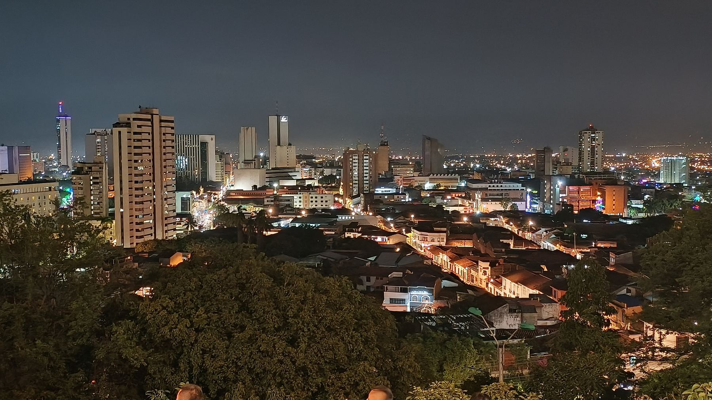
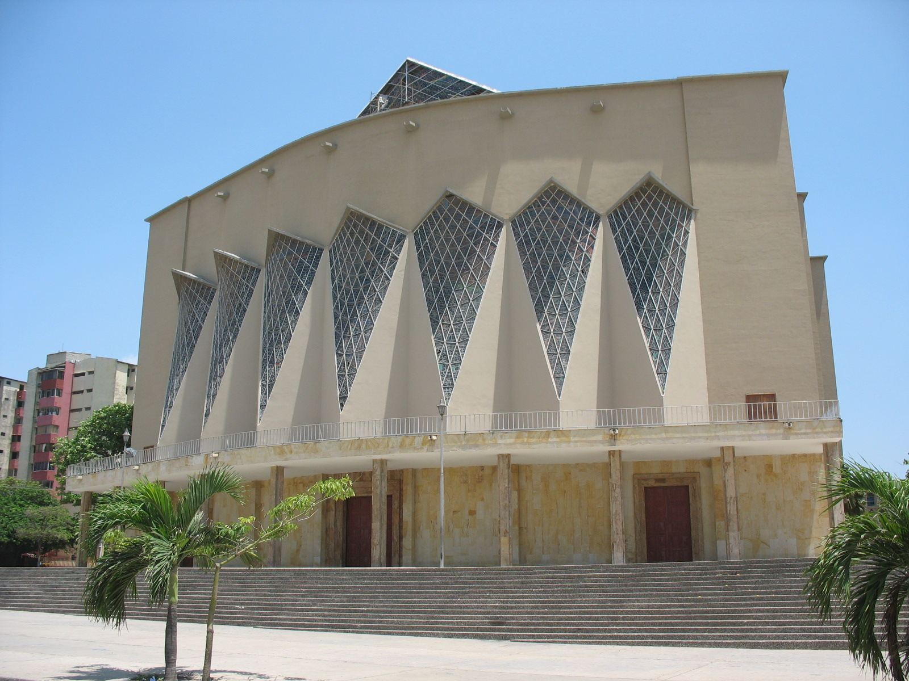
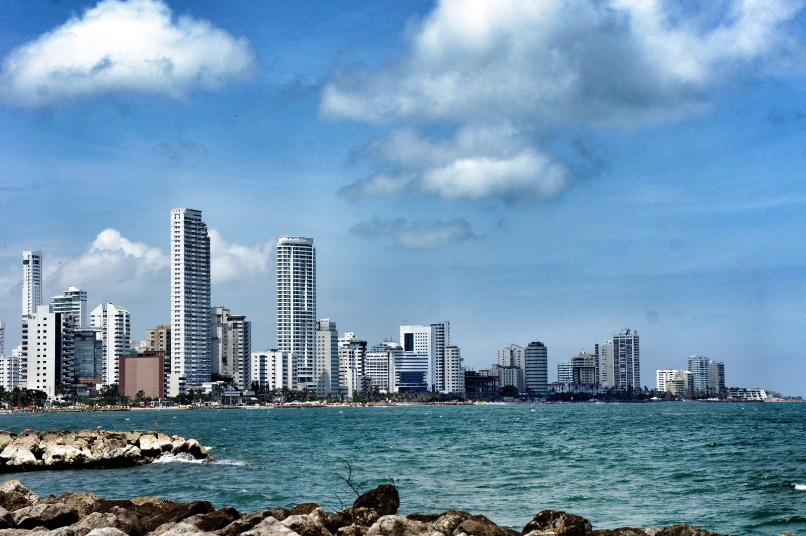

SINTRAOSI tiene siete regionales en el país, además de la sede nacional en Bogotá D.C. Cada regional cuenta con junta propia, cartelera informativa y comité de relaciones laborales.
Bogotá no es una regional más: aquí opera la Junta Directiva Nacional de SINTRAOSI y se atiende directamente a los afiliados de la capital.

CALCartelera informativa activa en Clínica Sebastián de Belalcázar.
Ver regional →
BAQRegional en pie de lucha frente a decisiones del Grupo Keralty.
Ver regional →
CTGRegional con afiliados activos en Cartagena y la costa Caribe.
Ver regional →Regional en formalización — datos de contacto y junta pendientes.
Ver regional →Regional en formalización — datos de contacto y junta pendientes.
Ver regional →¿Tu ciudad no aparece? Escríbenos.
Contáctanos →